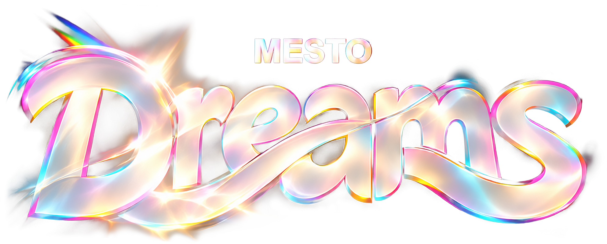

16:00–20:00DAY
Exhibition & installations
Explore the painting exhibition and interactive art installations, and meet the artists behind the work. Artist-led workshops run throughout the afternoon at reduced festival prices, paid for separately.
KOH PHANGAN
16:00–02:00
27–28 DECEMBER 2026

Christmas & New Year
Art Festival
Art Exhibition · Music
Immersive Experiences
16:00–02:00 · Ends 28 December
Adults only · Re-entry allowed
A COLLECTIVE DREAM
For one day and one night, MESTO becomes a world imagined by artists, musicians, and you.
Paintings, interactive installations, workshops, music, and unexpected encounters come together in a space transformed especially for Dreams. Come to explore in the afternoon. Stay to dance into the night.
The programme and DJ lineup are being updated.
Explore the painting exhibition and interactive art installations, and meet the artists behind the work. Artist-led workshops run throughout the afternoon at reduced festival prices, paid for separately.
DJ sets and dancing take centre stage in the evening. Selected installations remain open throughout the night.
Workshops are paid for separately. The full programme, prices and booking details will be announced.
THE PEOPLE BEHIND THE DREAM
Working across drawing, painting, street art, and installation, Anastasia explores inner states, symbolism, and dialogue with space. Her projects span Russia, Asia, and Europe, independently and as part of the Vitae Viazi duo.
Over twenty years of working across animation, music, street art, painting, sculpture, installations, and design. His practice brings together technology, craft, humor, and personal storytelling.
Lu Maria & Nata
Lu and Nata work together across craft, media, and performance. Rooted in explorations of sexuality and gender, their practice speaks of intimacy, community, and the power of vulnerability — creating objects and rituals that transform the atmosphere of a space.
A musician and DJ working across styles. Part of SOUR SOMA, Subject Jam Orchestra, Clock Divider, and ELECTRIC BLOW.
OPEN CALL
The programme is still taking shape. Artists, musicians, makers, and performers — tell us what you’d like to create.
Join the open callDRESS CODE · AN INVITATION
A night moth, a person from the future, a talking flower, your own double. Start with a character — or one unusual detail.
BECOME PART OF THE DREAM
An afternoon of discovery, a night of dancing, and a world created especially for this day.
Loading secure payment…
If the form does not open, use the separate payment window or contact MESTO on Telegram.
GOOD TO KNOW
Workshops are paid for separately at special reduced prices for festival ticket holders. Individual workshop details and any registration requirements will be announced.
Yes. You’ll receive a wristband at the entrance. It is your pass for re-entry throughout the festival, from 16:00 to 02:00. Keep it on until the end of the event.
Dreams is an adults-only event.
We’re adding participants, workshops and the DJ lineup as they are confirmed. If you have a question now, message us directly on Telegram.
MESTO · KOH PHANGAN
27 DECEMBER 2026 · 16:00–02:00